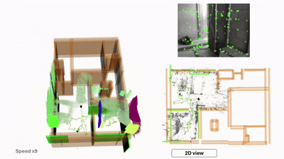
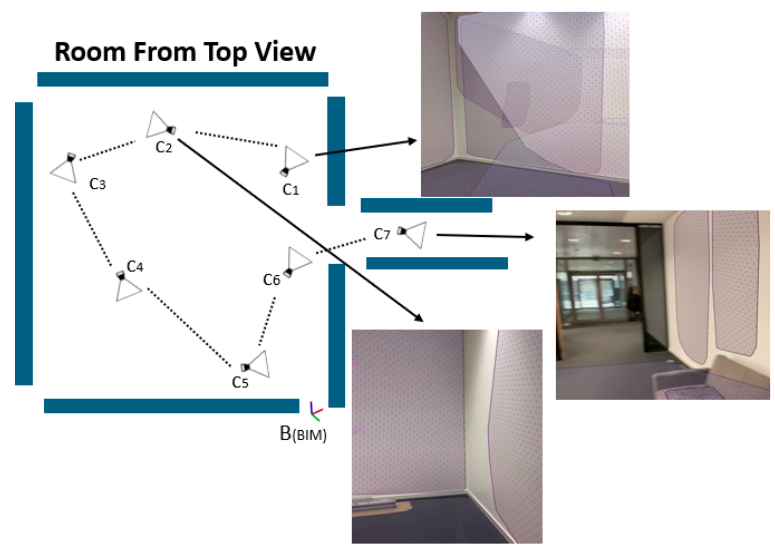
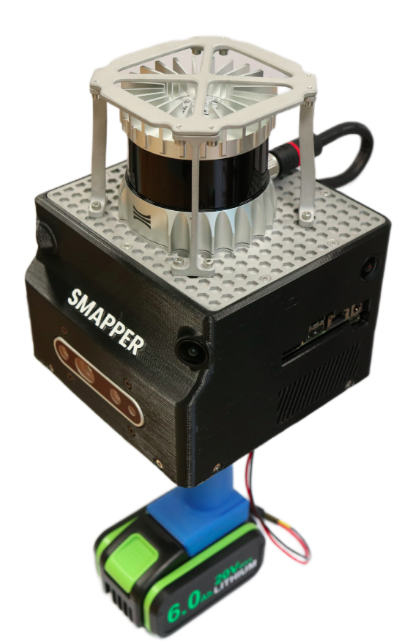
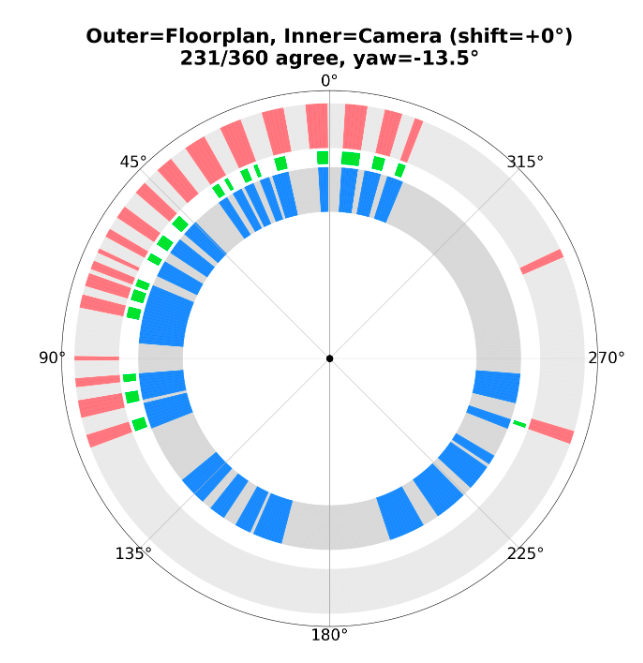
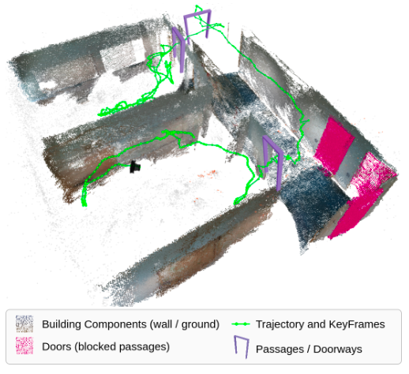

Asier Bikandi-Noya.
comparing the world we see with the world we drew.
Hi, I’m Asier, a doctoral researcher at the University of Luxembourg (SnT), part of the Automation & Robotics Group. My PhD is carried out in collaboration with an industrial partner working on AR for construction. Before starting my PhD, I worked as a Robotics & Computer Vision Engineer at Mondragon Assembly.
My research focuses on spatial AI, with a particular emphasis on visual SLAM for indoor environments. I work on integrating prior knowledge (such as BIM models or floorplans) into the SLAM back-end to enable accurate localization and 3D scene understanding. A key part of my work is leveraging hierarchical concepts in the environment, from high-level structures like rooms and corridors down to walls and objects, to align and compare as-built and as-planned representations.
Recently, I have also been working with multi-camera setups, including binocular fisheye configurations that provide a 360° field of view. Applications of this line of research include construction monitoring with AR, where on-site deviations can be detected and visualized in real time.
Papers, preprints, and workshop work.
-
2026
RA-L · in review
S · 1BIM-Informed Visual SLAM for Construction Monitoring
IEEE Robotics and Automation Letters · under review · first author
−23.71% trajectory error · −7.14% map RMSE vs. baseline
-
Jul 2025
★ Award
W · 1BIM-Constrained Optimization for Accurate Localization and Deviation Correction
★ Best Poster · 2nd place · ICRA 2025 Workshop on Future of Construction · Atlanta
-
2026
Journal
J · 1SMapper: A Multi-Modal Data Acquisition Platform for SLAM Benchmarking
Journal of Intelligent & Robotic Systems · Art. 23 · contributing author
-
2026
Workshop
W · 2COMPASS: COmpact Multi-channel Prior-map And Scene Signature for Floor-Plan-Based Visual Localization
ICRA 2026 Workshop on Robots Meet Prior Maps · Vienna · contributing author
-
2026
Workshop
W · 3Passage-Aware Structural Mapping for RGB-D Visual SLAM
ICRA 2026 Workshop on Robots Meet Prior Maps · Vienna · contributing author
Awards & recognitions.
Best Poster — 2nd place
ICRA 2025 · Future of Construction Workshop · Atlanta
Proposed a Visual-SLAM approach that uses BIM constraints to reduce trajectory drift in indoor construction environments.
EIT Manufacturing Scholarship
Co-funded by the European Union · TU Wien & Mondragon Unibertsitatea
Selected for the Double M.Sc. programme “Human-Robot Interaction for Sustainable Manufacturing”.
Education & experience.
Experience
Education
What I use.
Get in touch.
Happy to chat about Visual SLAM, BIM, or construction robotics — or just coffee.
I’m open to research collaborations, dataset exchanges, and conversations with industry teams working on AR for construction. Reach out by email or drop a line on LinkedIn.
2 Av. de l’Université, L-4365 Esch-sur-Alzette